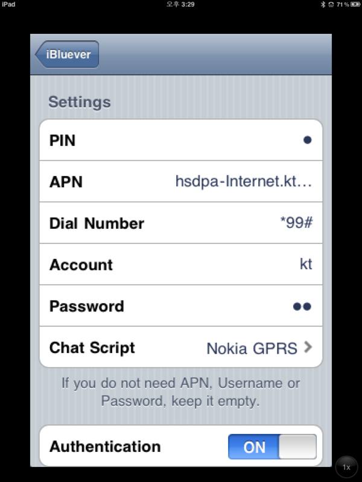
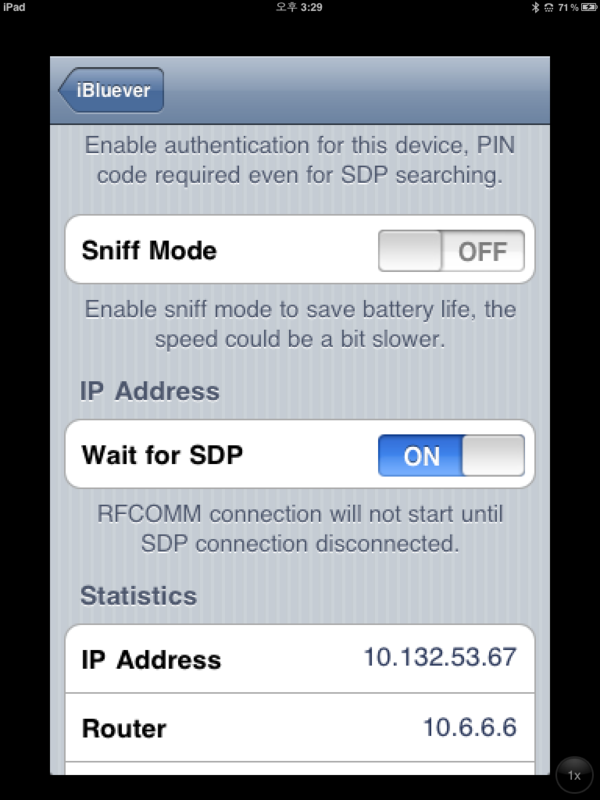
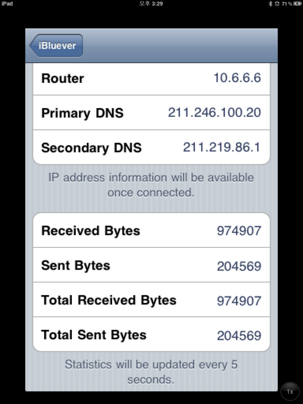

POSTS
Nokia의 스마트폰 XpressMusic 5800 에서 iPad로 bluetooth 테더링 하기
- 아이패드 wifi버전 사용 중
- 이동 중 인터넷을 위해 Nokia의 스마트폰 XpressMusic 5800에 Joikuspot 설치하여 테더링(WIFI hotspot방식) 사용 중
- 그러나 인터넷 속도 너무 느리고 XpressMusic의 밧데리를 너무 많이 사용 함
(핸드폰 밧데리가 full인데도 2시간 이하 정도 밖에 사용 불가) - 그래서 XpressMusic을 블루투스 모뎀으로 사용하여 인터넷 시도
- 속도 빠르고 밧데리도 적게 먹는 듯
< 세팅 예 >

- PIN : 아무거나(이후 노키아 폰에서 암호를 물어올 때 같은 문자만 넣으면 됨)
- APN : hsdpa-internet.ktfwing.com
- Dial Number : *99# 혹은 016 (노키아가 아닌 다른 폰은 번호가 틀릴 수 있음)
- Account : kt
- Password : kt
- Chat Script : Nokia GPRS
- 나머지는 아래 처럼 기본 값그대로 두면 됨

